Examples
Building Footprints in Seattle
In this example, we’ll create an adjacency analysis of some building footprint data in an area of Seattle near Gasworks Park. Footprint data is great for this demonstration because no two features intersect. We’ll use the free Microsoft building footprint dataset, available via ArcGIS here.
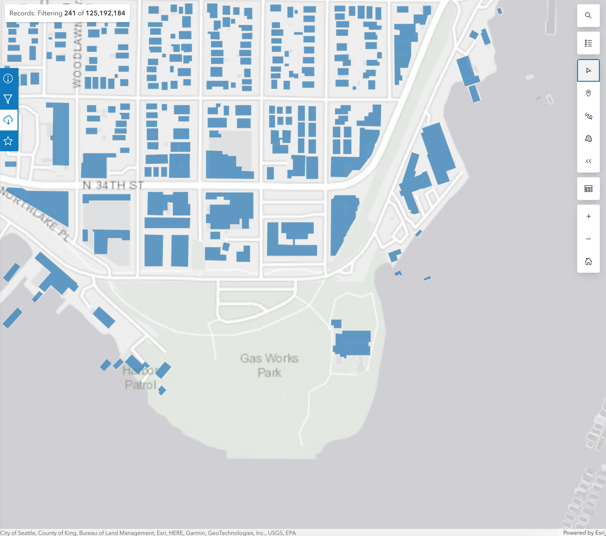
We’ll also bring in a park polygon for Gasworks Park, and also the road network so we can see how different inputs can lead to different interpretations of adjacency.
Source-Source Adjacency
The simplest case is determining adjacency between features within the same set. We’ll called this “source-source” adjacency. Our source features will be the building footprints, so we’ll determine which buildings are next to other buildings.
First, let’s do a little setup. The example data can be found in the geo-adjacency repo on GitHub.
from geo_adjacency.adjacency import AdjacencyEngine import os.path import json from shapely.geometry import shape # Load GeoJSON geometries into a list of Shapely geometries def load_geojson(path): with open(path) as f: return [shape(feature["geometry"]) for feature in json.load(f)["features"]] data_dir = os.path.join(os.path.dirname(__file__), 'data') source_path = os.path.join(data_dir, 'Buildings.geojson') target_path = os.path.join(data_dir, 'Parks.geojson') obstacle_path = os.path.join(data_dir, 'Roads.geojson') # Note: the source data was cleaned up to remove z coordinates. source_geoms = load_geojson(source_path) target_geoms = load_geojson(target_path) obstacle_geoms = load_geojson(obstacle_path)
This code loads the sample data, which is in GeoJSON format.
Next, create the engine, and visualize the analysis
engine = AdjacencyEngine(source_geoms) adjacency_dict = engine.get_adjacency_dict() # defaultdict(<class 'list'>, {0: [7, 90, 98, 101], 1: [54, 59, 136, 221], 2: [10, 137, ... ]}) engine.plot_adjacency_dict()
First we get the dictionary of adjacency links. The keys and values point to features in the list of source_geoms by their indices.
We also get the following visualization:
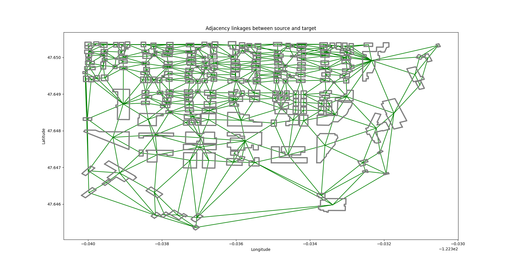
If we zoom in, we can see additional detail. Each green line connects one building to an adjacent one.
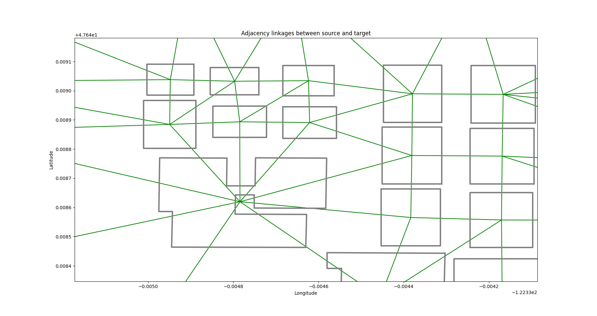
If we want, we can inspect the Voronoi diagram used in the analysis. This can be very useful for debugging. (See Methodology)
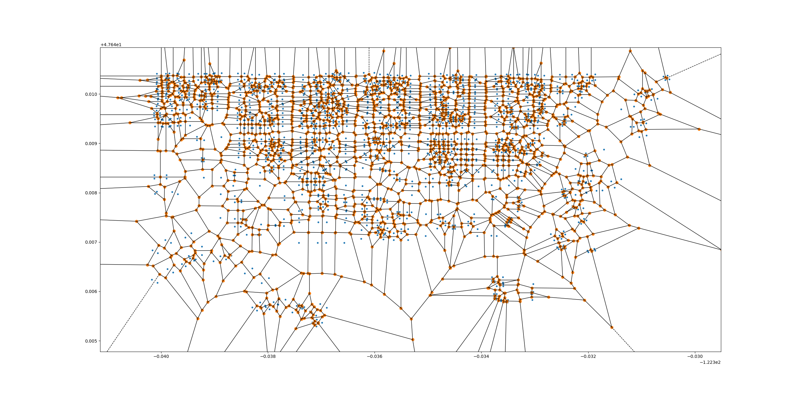
Here, each region is the area of the plane which is closer to each input point (blue here) than to any other. The vertices of the Voronoi regions are in orange.
We determine adjacency by taking the set of all Voronoi regions belonging to a building polygon when we break that polygon into its vertices. Then we see if two or more Voronoi region vertices are shared with any other building.
If you want to determine why you are getting unexpected results, consult this diagram. It’s possible that the source data needs some modifications to produce the desired results.
Source-Target Adjacency
Sometimes we want to look for the adjacency relationships between two separate sets of geometries, rather than within a single set. We’ll call this scenario source-target adjacency.
In our example, we can continue to use building footprints as our source geometries, but add nearby parks as our targets. After all, it’s pretty nice to live with a view of a lovely park out your window!
Our setup is very similar to before.
engine = AdjacencyEngine(source_geoms, target_geoms) engine.plot_adjacency_dict()
And here’s the output:
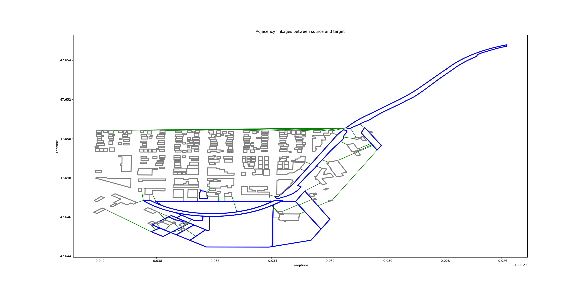
Source features are in gray. Target features (parks) are outlined in blue. Adjacency links are in green, as before.
Note
As of version 1.1.x, there is no maximum distance parameter. This will be added in version 1.2.x
Source-Target-Obstacle Adjacency
Ok great, we know which buildings are next to parks. But what if I don’t want to walk across the street to get to a park? Let’s add some obstacles.
We’ll use some free Open Street Map road data to act as obstacles. These geometries will be part of the Voronoi diagram, but we won’t include them in the output, since we don’t care what our adjacency relationship with obstacles is.
engine = AdjacencyEngine(source_geoms, target_geoms, obstacle_geoms) engine.plot_adjacency_dict()
Output:

Roads are in red. Now we see far fewer adjacency linkages, except for a few buildings that seem to being inside the large park at the south end of the query area.
Setting a Maximum Distance
In the above examples, we had some weird-looking adjacency links were building footprints from the far west (left) side of the area were linked to a park on the far east side. This is because there were no further geometries further to the north to stand between the park and these footprints.
We should set a maximum distance to ensure that we aren’t getting linkages further than a reasonable distance. This adds a bit of processing time, but is still reasonably fast.
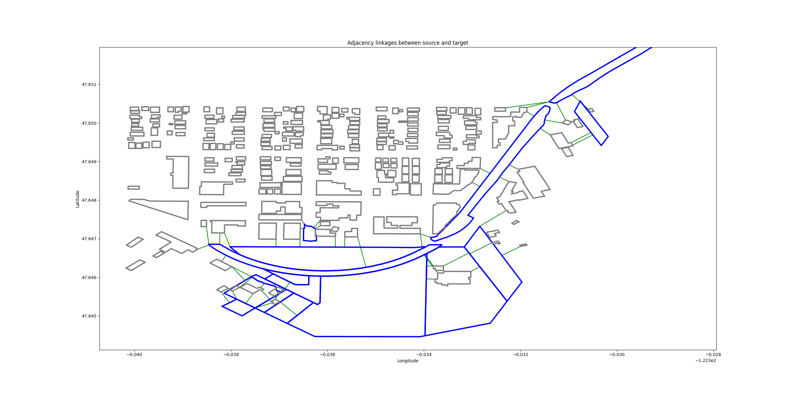engine = AdjacencyEngine(source_geoms, target_geoms, **{"max_distance": 0.001}) engine.plot_adjacency_dict()
The undesired adjacency linkages are gone.
Setting a Bounding Box: Windowed Analysis
We can also set a bounding box around the features that we want to include in an analysis. This serves two purposes.
We sometimes get weird results around the edges of the data. In the footprint example above, the buildings at the north (top) end of the area were linked to a park simply because there was no additional footprint data in the analysis to block those links.
Suppose we wanted to analyze an entire city? That could potentially take a long time. We might want to multi-thread that operation, or use a distributed computing framework like Apache Spark. Setting a bounding box allows us to set a moving window over our data, analyzing one section at a type with sensible overlaps between windows. The resulting adjacency dictionaries can be merged at the end.
Let’s run the building footprint analysis again with a bounding box.
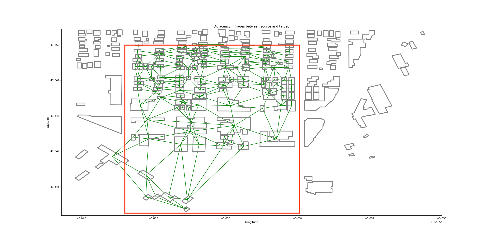engine = AdjacencyEngine(source_geoms, **{"bounding_box": (-122.33872, 47.645, -122.33391, 47.65)}) engine.plot_adjacency_dict()
The adjacency links are restricted to the red bounding box, giving us clean edges.
Segmentization
The Voronoi adjacency method often works well out of the box, but sometimes we get weird results.
Take the following example. We have a single source, target, and obstacle geometry each.
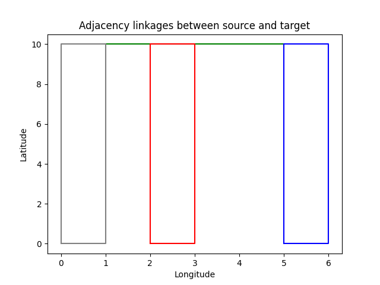
What’s going on here? There is a green adjacency link between the source and target, even though there is an obstacle that clearly stands between them.
A look at the Voronoi diagram reveals the problem:
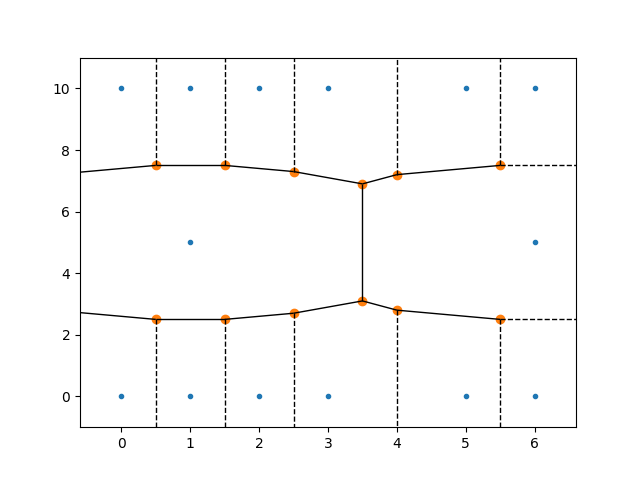
Aha! It looks like our source and target polygons each have a superfluous vertex along their long sides, but the obstacle polygon doesn’t. As a result, the Voronoi regions for the source and target pass right through the center of the obstacle.
This won’t do. Unfortunately, there isn’t a terrific way to efficiently create a perfect Voronoi diagram from a polygon. However, we can get a pretty good approximation by adding a few extra vertices along our input geometries to make them a bit more “solid.”
You can certainly do this in pre-processing, and that will definitely give you the most control over the results. But in most cases, the AdjacencyEngine’s built-in segmentization feature can do the job.
engine = AdjacencyEngine(source_geoms, target_geoms, obstacle_geoms, **{"densify_features"=True})
Just set densify_features to True, and the AdjacencyEngine will calculate the average segment length of all input geometries and divide it by five. It then adds a point at that interval along each geometry.
The new Voronoi diagram is much denser:
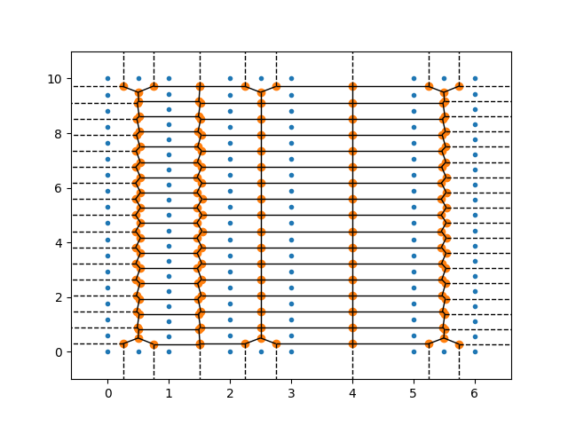
… and the adjacency link is now gone:
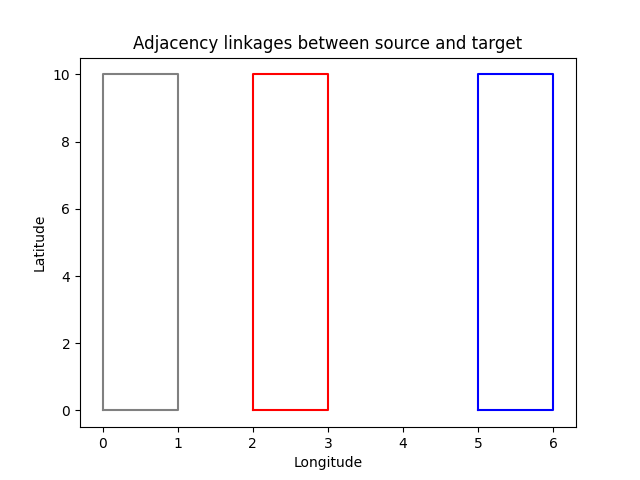
It’s also possible to specify your own segmentization interval:
engine = AdjacencyEngine(source_geoms, target_geoms, obstacle_geoms, **{"densify_features"=True, "max_segment_length"=0.1})Warning
Smaller max_segment_length values will potentially increase the accuracy of the diagram, but they will also increase processing time. Use the largest possible value.
Data Sources
Parks: https://data.seattle.gov/City-Business/Seattle-Parks-and-Recreation-GIS-Map-Layer-Web-Ser/7kzh-zp2d